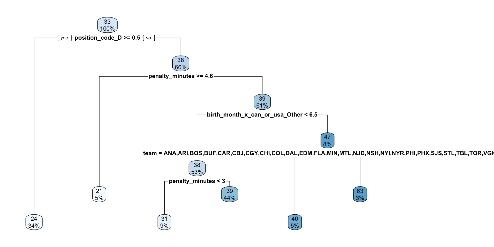

library(tidyverse)
data_nhl <- read_csv("https://www.dropbox.com/scl/fi/bl8fc27dxunn585o6tyhx/nhl_player_stats.csv?rlkey=kl9usgrmm0ci25n0v95irlzc3&st=27c9lurl&dl=1")Introduction to Predictive Modeling with Pipelines
PRISM 2026
Dr. Allison Theobold
Welcome!
Materials for this workshop can be found here:
Our Goal
- Cleaning the data
- Visualizing relationships
- Choosing predictor (input) variables
- Choosing between competing models
- Interpreting model conclusions
- Ethics considerations
Today’s Data - NHL

Data Context - NHL Player Statistics
The data for today is taken from this Kaggle dataset of NHL player statistics. The data contain statistics on every NHL player for the 2004 through 2018 seasons assembled by Xavya.
- Data were scraped from: https://www.hockey-reference.com/
- Skater statistics were scraped from: https://www.hockey-reference.com/leagues/NHL_2018_skaters.html
- Hart MVP voting was scraped from: https://www.hockey-reference.com/awards/hart.html
Data Context - NHL Player Birthdays
We also added in this Tidy Tuesday dataset of player height, weight, and birthday information.
This information was acquired through the NHL API.
Why are we interested in hockey data?
Dr. Wasila Dahdul will discuss the importance of considering the social and historical context to work responsibly with secondary data!
Loading the Data
I’ve saved the .csv to Dropbox, so we can read it in using a URL. Run the code provided to load the data.
Inspecting the Data
Take a few minutes to look over the data.
What is the observational unit? (i.e., what uniquely identifies a row?)
What are the variables?
- Are there any variables whose meaning is not obvious?
What are the data types of the variables (e.g., number, character, date)
Observations & Variables
Each row is a player’s statistics from one season. The variables measured about each player are:
- identification:
first_name,last_name - physicals:
height,weight,age(for that season) - birth Information:
birth_date,birth_day,birth_month,birth_city,birth_country,birth_state_province - position & team:
team,position_code(right wing, left wing, center, or defense),position_type(forward or defense), andsweater_number. - statistics for the season:
games_played,goals,assists,points(goals plus assists),plusminus(team goal differential when player is playing), andpenalty_minutes.
Posing a Question
We will use these data to try to address this question:
What features of an NHL player are associated with them scoring more points (goals + assists) in a particular season?
Steps 1 & 2: Cleaning & Visualizing the Data
Our goal here is to visualize variables we are interested in to look for interesting patterns, while also looking for issues or anomalies to fix in the data.
Numeric Variables
What are we looking for?
Unusual observations that we might need to remove.
Variables that are very skewed and might need to be transformed.
Variables that are extremely multimodal and might need to be binned.
Variables with values that we might want to omit from our study because they are not relevant to the question.
Investigating with Visuals
Use the template code provided to create visuals of each numeric variable in the data_nhl dataset:
height_in_inchesweight_in_poundsagebirth_monthgames_played
goalsassistspointsplusminuspenalty_minutes
Do you find anything notable?
Addressing Unusual Observations
Based on what you found in these visuals, there are a few extreme observations in some of the variables. There are two possible explanations for these extreme values:
These represent a player that genuinely had an extreme performance in a season.
These are data entry or recording errors.
Either way, we will choose to omit them, since they might be misleading to our results.
R & Python Code
R Code
Python Code
Categorical variables
What are we looking for?
- Categories that should be combined to make a few larger ones.
- Variables that should have an
"Other"category to combine the rarest categories. - Variables with too many categories to reasonably include them in our analysis.
- Variables that are subsets of each other, so we might want to include only one or the other.
- Anything that suggests issues with the data to fix.
Investigating with Visuals
Use the template code provided to create visuals of each numeric variable in the data_nhl dataset:
seasonteamposition_code,position_type
birth_citybirth_countrybirth_state_province
Do you find anything notable?
Addressing Unusual Observations
These visualizations should reveal two issues:
For some reason, the entries for the
2009season are listed twice. We will simply delete the duplicates.The
birth_city,birth_state_province, andbirth_countryvariables have far too many different values to reasonable use.
- We will use the
countryvariable only, and we will limit its values to"Canada","United States", or"Other".
R Code
Python Code
Data Ethics & Categorical Variables
- Creating an “Other” category might feel fairly benign, but this isn’t always the case.
- Let’s consider a different variable—
gender.
- Let’s consider a different variable—
- Suppose we lump all the PALiISaDS students not identifying as a woman or a man into a category named “Other.”
- What message does that send to students who identify as non-binary or trans*?
- What if we created two levels for the variable
race—"White"and"Non-White".- What message does that send to students of color?
Check-in!
Let’s re-visualize the “problem” variables to make sure our cleaning changes accomplished what we hoped!
Variables to Check:
pointspenalty_minutesgames_playedseasoncan_or_usa
Step 3: Chooing Candidate Predictors
Which of these variables are associated with scoring points?
We will answer this question with a predictive model.
- Information from predictor variables will help us guess the value of the target variable (
points).
To decide which variable(s) to use as predictors, we need to find the variables with the strongest relationship with points.
Numeric Variables
Consider the numeric variables in this dataset. Which ones might be reasonable to use in our model?
Use the code provided to visualize the relationship between
pointsand a few of these potential predictors.Decide which variable(s) seem to have the strongest relationship with our target variable (
points).
Warning
You may have noticed that goals, assists, and plusminus are highly associated with points. Why might it be a bad idea to use these as predictors in our model?
Categorical Variables
Consider the categorical variables in this dataset. Which ones might be reasonable to use in our model?
Use the code provided to visualize the relationship between
pointsand a few of these potential predictors.Decide which variable(s) seem to have the strongest relationship with our target variable (
points).
Multiple Variables
Sometimes, the way one variable associates with points might be different depending on another variables.
For example, it is believed that players who are born earlier in the month are more likely to become professional athletes.
But! It may be that this trend only applies in some countries, since not all countries have the same youth sports system. Let’s see!
Make Predictor Recipes
Now, we are ready to prepare our recipes: the different combinations of predictors that we think could produce a good model.
We’ll try two recipes today:
One with all the possible predictors
One with only the three “best” predictors that you choose.
R & Python Code
R Code
Python Code
Specifying Candidate Models
The other decision we must make is which model types to try.
In this analysis, we will try Linear Regression and a Decision Tree.
Linear regression is a natural choice since we have a continuous numerical outcome and the interpretations are quite simple.
A decision tree is a simple choice for a non-statistical model that also has easy interpretations.
Warning
There are many, many, many different model types that we can use for any given modeling problem.
There is no magic formula for deciding which ones to try. As you get more experience with modeling, you’ll develop more instincts for what range of options to try.
R & Python Code
R Code
Python Code
Pre-Processing Options
Recall that we noticed a few interesting things in our exploratory data analysis:
penalty_minutesis very right-skewedBirth country seems to impact how birth month impacts the target.
We will add a transformation and an interaction to our workflow.
R & Python Code
R Code
Specify transformer and variable(s) at the same time
Python Code
Specify “general” transformer, then apply the transformer to specific columns.
Combining Data & Models
We will try all our different model type options with all our different recipe and preprocessing choices.
Each of these candidate options is called a workflow or a pipeline.
R & Python Code
R Code (Template)
Python Code (Template)
Step 4 – Choosing between Competing Models
Everything we have done to this point was setup.🤪 But now we’re ready to try out our workflows!
Comparing Models
Now, how will we compare the four options and see which one is most successful at predicting points?
The process goes like this:
Randomly set aside 20% of our data rows as a test set. The rest is called the training set.
Fit all of the workflows on the training set.
See how well each fitted workflow does at predicting on the test set.
Warning
In Part 2 of the workshop, you will learn about using cross-validation to choose between different models. This is essentially the process of creating many different test/training splits.
Test / Train Split
R Code
Python Code
Fit Our Models on the Training Data
R Code (Template)
Python Code (Template)
Assess Models on Test Data
Finally, we will use these fitted models to make predictions on the test data, and we’ll see how close these predictions were to the true observed values for points
Note
In this analysis, we are using root mean squared error as our metric for the test data. That is, we take the squared difference between the predicted number of points a player will get and the actual number of points they get, then we add those numbers up and take the average.
\[ \sqrt \frac{\sum_{i=1}^n (y_i - \hat{y}_i)^2}{n}\]
R & Python Code
R Code (Template)
Python Code (Template)
from sklearn.metrics import mean_squared_error
# Split data into predictors
X_test = data_nhl_test.drop(columns = ["points"])
# and target
y_test = data_nhl_test["points"]
# Make predictions
pred_lr_all = wflow_lr_all_fit.predict(X_test)
# Calculate prediction errors
rmse_lr_all = np.sqrt(mean_squared_error(y_test, pred_lr_all))What did you get???
Of our four candidate workflows, which model is the “best” model?
By how much? How close is the next best model?
Fit your final model
We used out test/training split to assess our candidates. However, once we’ve chosen a winner, we want to make sure we use all our data for our final conclusions!
Step 5 – Interpreting Model Conclusions
Interpreting your Final Model
- Sometimes, the goal of your machine learning process is simply to produce a model.
- You can use the model to predict which players you should draft!
- Other times, the goal is more about interpretation.
- You want to tell stories about the patterns in the data.
Since our best final model was a decision tree, we’ll make a dendrogram visualizing the splits.
In R

In Python
from sklearn.tree import plot_tree
import matplotlib.pyplot as plt
n_features = final_model.named_steps["decisiontreeregressor"].n_features_in_
feature_names = [f"feature_{i}" for i in range(n_features)]
plt.figure(figsize=(16, 8))
plot_tree(
final_model.named_steps["decisiontreeregressor"],
feature_names=feature_names,
filled=True,
rounded=True,
max_depth=3
)
plt.show()Step 6 – Ethical Considerations
Models that can do harm
- Predictive models are great at predicting.
- Predictive models are not great in knowing if their model is harmful.
Suppose instead we wanted to predict a student’s likelihood of success in college. Our predictive model suggests that:
zip_code,parental_education,
first_generationstandardized_exam_score
are strongly related to students’ college performance.
Who does this model privilege? Who is being harmed by this model?